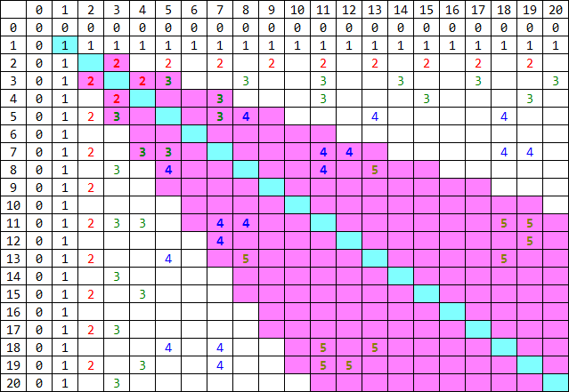

定义 $E \left( x, y \right)$ 是对 $x, y$ 进行 Euclid 算法所需要的步数。形式化地，$E \left( x, y \right)$ 由如下性质定义：
$E \left( a, b \right) = E \left( b, a \right)$ 对 $\forall a, b \in \mathbb N$ 成立。
$E \left( 0, a \right) = 0$。
若 $0 < a \leq b$，则 $E \left( a, b \right) = E \left( b \bmod a, a \right) + 1$。
现在有 $Q$ 次询问，每次询问给定 $X, Y \in \mathbb N^*$，你需要求出 $M = \max\limits_{1 \leq x \leq X} \max\limits_{1 \leq y \leq Y} E \left( x, y \right)$ 以及 $\displaystyle C_M = \sum_{x=1}^X \sum_{y=1}^Y \left[ E \left( x, y \right) = M \right]$。
第一行包含一个正整数 $Q$ ($Q \leq 3 \times 10^5$)，表示询问的组数。
接下来 $Q$ 行，每行两个正整数 $X_i, Y_i$ ($X_i, Y_i \leq 10^{18}$)，表示每组询问的 $X$ 和 $Y$。
对于每组询问，输出一行，包含两个整数，依次表示 $M$ 和 $\left( C_M \bmod \left( 10^9 + 7 \right) \right)$ 的值。
注意到 $E \left( 1, 1 \right) = 1$，所以 $M \geq 1$。
又 $E \left( 2, 3 \right) = 2$，因此 $M = 1 \Leftrightarrow \min \left\{ X, Y \right\} = 1 \vee X = Y = 2$，因此容易特判完成。以下默认考虑答案 $M \geq 2$ 的情形。
定义 Fibonacci 数列满足 $f_0 = 0, f_1 = 1, f_n = f_{n-1} + f_{n-2}$ ($n > 1$)，定义不同自行调 offset。其次，定义 $\left( a, b \right) \preceq \left( A, B \right)$，如果 $\min \left\{ a, b \right\} \leq \min \left\{ A, B \right\} \wedge \max \left\{ a, b \right\} \leq \max \left\{ A, B \right\}$ (偏序关系)。
其次，我们可以不妨假设 $X \leq Y$，以及在数对中有 $a \leq b$。
考虑 $E \left( a, b \right) = 2$ 的对，由上所证由 $\left( 2, 3 \right) \preceq \left( a, b \right)$。
若 $E \left( a, b \right) = 3$，说明 $E \left( b \bmod a, a \right) = 2 \Rightarrow \left( 2, 3 \right) \preceq \left( b \bmod a, a \right) \Rightarrow \left( 3, 5 \right) \preceq \left( a, b \right)$。
以此类推，可得若 $E \left( a, b \right) = m \geq 2$，则 $\left( f_{m+1}, f_{m+2} \right) \preceq \left( a, b \right)$。
设 $M'$ 为最大的 $m$，满足 $\left( f_{m+1}, f_{m+2} \right) \preceq \left( X, Y \right)$。
则，一方面，$M \geq M'$，因为 $1 \leq f_{M'+1} \leq X, 1 \leq f_{M'+2} \leq Y$，而 $E \left( f_{M'+1}, f_{M'+2} \right) = M'$。
另一方面，$M \leq M'$。因为对于 $\forall E \left( x, y \right) = m$，有 $\left( f_{m+1}, f_{m+2} \right) \preceq \left( x, y \right) \preceq \left( X, Y \right) \Rightarrow m \leq M'$。
综上，有 $M = M'$，从而我们已经求得了答案 $M$。一下我们只需考虑有多少对 $x \in \left[ 1, X \right], y \in \left[ 1, Y \right]$，满足 $E \left( x, y \right) = M$ 了。
首先，基于我们的假设 $M \geq 1$，故一定有 $x \neq y$。我们定义一个无序对 $\left( x, y \right)$ ($x < y$) 是均匀的，当且仅当 $x < y < 2 x$。
又因为如果把 $E \left( x, y \right)$ ($x < y$) 看成一个关于 $y$ 的单变量函数，则它是以 $x$ 为周期的。因此对于任意一个 $\left( x, y \right)$ ($x < y$)，如果 $y > 2 x$，则可以令 $y' \gets x + \left( y \bmod x \right)$，从而有 $E \left( x, y' \right) = E \left( x, y \right)$，且 $\left( x, y' \right)$ 是均匀的。
根据上面这段话，我们可以定义出一个均匀化函数 $U \left( x, y \right) = \left( x, y' \right)$，把任意一个数对转化为均匀的数对，且 $E$ 值不变。
接下来，定义无序对 $\left( x, y \right)$ 是优秀的，如果不存在 $\left( x', y' \right) \prec \left( x, y \right)$ 且 $E \left( x', y' \right) > E \left( x, y \right)$。
不难发现，若一个无序对不是优秀的，则它不可能被计入到答案 —— 因为 (单调队列原理) 一个选手比你小，还比你强，那你就打不过他了。
接下来，有一个显然的引理：若 $\left( x, y \right)$ ($x < y$) 是优秀的数对，则 $U \left( x, y \right)$ 也是优秀的数对。证明：略。
于是，我们只需要考虑哪些既均匀，又优秀的数对了。
值得庆幸的是，这样的无序对不超过 $M$ 个，可以通过下图来体验一下 (其中有数字的表示优秀的数对，粉色区域表示均匀的数对)：
那么下面我们就来归纳着证明这个命题，顺便给出从 $E$ 值为 $M$ 的 $M$ 个数对到 $E$ 值为 $M + 1$ 的 $M + 1$ 个数对的递推构造。
用 $\mathcal D_M$ 表示 $E$ 值为 $M$ 的均匀优秀的无序数对的集合，则 $\mathcal D_2 = \left\{ \left( 2, 3 \right), \left( 3, 4 \right) \right\}$，且 $\left| \mathcal D_2 \right| = 2$，归纳奠基完成。
首先，证明第一个引理：若 $\left( x, y \right)$ ($x < y$) 是均匀优秀的，则 $\left( y, x + y \right)$ 也是均匀优秀的。
均匀性显然，下证其优秀性。
根据 (后面将证的归纳假设)，$\forall \left( x, y \right) \in \mathcal D_{m-1}$，有 $x \leq f_{m+1} \wedge y < f_{m+2}$。
于是对于 $E \left( y, x + y \right) = m$，不存在 $\left( x', y' \right) \prec \left( y, x + y \right)$ 满足 $E \left( x', y' \right) \geq m + 1$，否则由 $\left( f_{m+2}, f_{m+3} \right) \preceq \left( x', y' \right) \prec \left( y, x + y \right) \Rightarrow f_{m+2} \leq y$，矛盾。
从而我们已经得到了 $m - 1$ 个均匀优秀的数对，还有一个呢？
注意到最小的数对 $\left( f_m, f_{m+1} \right) \in \mathcal D_{m-1}$，考虑 $\left( f_m, f_m + f_{m+1} \right) = \left( f_m, f_{m+2} \right)$，它是一个非均匀但优秀的数对。那么，对其进行类似地操作，有
对 $m \geq 3$，有 $\left( f_{m+2}, f_m + f_{m+2} \right) \in \mathcal D_m$。
反设 $\left( x', y' \right) \prec \left( f_{m+2}, f_m + f_{m+2} \right)$，于是 $\left( f_{m+2}, f_{m+3} \right) \preceq \left( x', y' \right) \prec \left( f_{m+2}, f_m + f_{m+2} \right) \Rightarrow f_{m+1} + f_{m+2} = f_{m+3} < f_m + f_{m+2} \Rightarrow f_{m+1} < f_m$，矛盾。
那还有没有其它均匀优秀的数对呢？事实上是没有了，下面分两步证明：
若 $\left( y, x + y \right) \in \mathcal D_m$，则 $\left( x, y \right)$ 是 $E$ 值为 $m - 1$ 的优秀数对 (不一定均匀)。
由定义及偏序的性质知其显然。
若 $\left( x, y + r x \right)$ ($x < y; r \in \mathbb N^*$) 是 $E$ 值为 $m - 1$ 的非均匀优秀数对，则若 $\left( y + r x, y + \left( r + 1 \right) x \right)$ 是优秀的，当且仅当 $x = f_m, y = f_{m+1}, r = 1$。
若 $\left( y + r x, y + \left( r + 1 \right) x \right)$ 是优秀的，则一个必要条件是 $\left( f_{m+2}, f_{m+3} \right) \npreceq \left( y + r x, y + \left( r + 1 \right) x \right)$。
由于 $\left( f_m, f_{m+1} \right) \preceq \left( x, y \right)$ 知 $x \geq f_m, y \geq f_{m+1}$，又 $r \geq 1$，因此 $y + r x \geq f_{m+1} + 1 \cdot f_m = f_{m+2}$。
从而，有 $y + \left( r + 1 \right) x \leq f_{m+3}$，若 $r \geq 2$，则 $y + \left( r + 1 \right)x \geq f_{m+1} + 3 \cdot f_m = f_{m+2} + 2 \cdot f_m > f_{m+2} + f_{m+1} = f_{m+3}$，矛盾。
所以 $r = 1$，此时容易证明只有 $\left( f_m, f_{m+1} \right)$ 满足条件。
最后完成待证部分：$\forall \left( x, y \right) \in \mathcal D_m$，有 $x \leq f_{m+2} \wedge y < f_{m+3}$。
由均匀优秀数对的递推构造过程不难得到。
综上，我们就完成了对所有均匀优秀数对讨论的结构的讨论。
注意到答案 $M$ 是 $O \left( \log \min \left\{ X, Y \right\} \right)$ 级别的 (不到 $100$)，因此可以花平方级的时间内来得到所有均匀优秀数对。
最后，对于每组询问，算出 $M$ 后枚举这些均匀优秀数对，统计对应多少个优秀数对即可 —— 即求每个均匀优秀数对在映射 $U$ 下的原像个数。
时间复杂度 $O \left( \log^2 R + \sum\limits_i \log \min \left\{ X_i, Y_i \right\} \right)$，其中 $R$ 为值域范围。
#include <bits/stdc++.h>
#define EB emplace_back
typedef long long ll;
typedef std::pair <ll, ll> pr;
typedef std::vector <pr> vector;
const int mod = 1000000007;
int q;
ll A, B, f[89];
vector G[89];
int main() {
int i; ll ans = 0;
for (f[1] = f[2] = 1, i = 3; i < 89; ++i) f[i] = f[i - 1] + f[i - 2];
G[2].EB(2, 3), G[2].EB(3, 4);
for (i = 3; i < 87; ++i) {
G[i].reserve(i);
for (const pr &p : G[i - 1]) G[i].EB(p.second, p.first + p.second);
G[i].EB(f[i + 2], f[i + 2] + f[i]);
}
for (scanf("%d", &q); q; --q) {
scanf("%lld%lld", &A, &B), ans = 0;
if (A > B) std::swap(A, B);
if (A == 1 || B == 2) {printf("1 %d\n", int(A * B % mod)); continue;}
for (i = 2; f[i + 1] <= A && f[i + 2] <= B; ++i); --i;
for (const pr &p : G[i]) {
if (p.first <= A && p.second <= B) ans += ((B - p.second) / p.first + 1) % mod;
if (p.first <= B && p.second <= A) ans += ((A - p.second) / p.first + 1) % mod;
}
printf("%d %d\n", i, int(ans % mod));
}
return 0;
}
坑1：上面的分析对诸如 $M = 1$ 等的边界情况可能不适用，因此最好先特判掉。
坑2：不要忘记对答案取模，而且由于 $X, Y$ 非常大，答案在计算过程中就可能超过 long long范围。